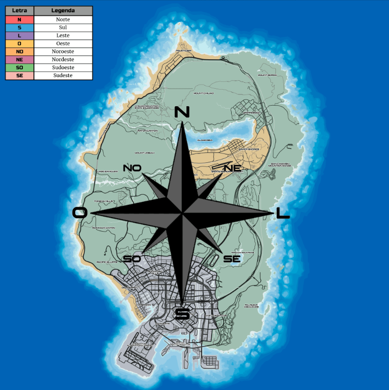

MANUAL DE COMUNICAÇÃO OPERACIONAL
Este material é destinado para apoio aos oficiais presente no 1°BPM-AV, tem como objetivo abordar de forma padrão os principais pontos referentes a modulação.
BARREIRAS NO PROCESSO DE COMUNICAÇÃO
Embora pareça muito simples, a comunicação encontra uma série de barreiras. Pode-se ter dois tipos de barreiras na organização: INDIVIDUAIS E ORGANIZACIONAIS.
INDIVIDUAIS
Por vezes a timidez ou medo de agir podem acarretar em erros na comunicação. Trabalhe estas inseguranças e pratique diariamente, a prática leva a perfeição.
É comum que cometamos erros e que situações desagradáveis ocorram durante uma patrulha. Contudo, mantenha a calma, controle sua emoções e procure soluções.
Não há vergonha em admitir que têm dúvida quanto a um procedimento ou modulação. Em todo o momento haverá superiores dispostos e capacitados para sanar todas as vossas dúvidas.
ORGANIZACIONAIS
É de caráter obrigatório que todo o código Q e os código de 0-6 estejam fixados na mente para a realização dos procedimentos com sucesso quando estiverem numa patrulha.
Exemplo de ModulaçãoUtilize do bom senso na hora de modular na rádio, espere a sua vez e não atropele outra modulação já em andamento. Seja direto e claro ao passar todas as informações necessárias durante a solicitação de apaio numa QRU.
Utilize do bom senso na hora de modular na rádio, espere a sua vez e não atropele outra modulação já em andamento. Seja direto e claro ao passar todas as informações necessárias durante a solicitação de apaio numa QRU.
 NORMAS PARA USO DA RÁDIO
NORMAS PARA USO DA RÁDIO
▪ Antes de modular qualquer informação, verifique se a rádio já não esta com uma modulação em andamento.
▪Não profira (fale) palavras obscenas, xingamentos, linguagem inapropriada ou conteúdos que não fazem sentido de serem modulados na rádio POLICIA.
▪ Seja breve, direto(a) e objetivo(a) em suas modulações, para não ocupar a rádio.
▪ Em ordens de oficiais superiores, não conteste as mesmas na rádio.
 UTILIZAÇÃO DO CP
UTILIZAÇÃO DO CP
Diferente da rádio, o CP - Chat policial, deve ser utilizado para comunicações onde não há necessidade de uma compreensão imediata
Deve ser utilizado para informações como entrada e/ou encerramento de serviço; informações sobre perda de visual de veículos de acompanhamentos; números de B.O, etc...
Exemplo de utilização do CP:▪ "QAP Central, qual o número do B.O da QRU do SultanRS?"
▪ "QAP Central, alguma unidade com vaga ou oficial sem PTR para iniciar código 0?"
OBS: Vale lembrar que a má utilização do CP pode acarretar em reciclagem.
CÓDIGO Q
O Código Q, para os policiais, faz com que possamos ter maior organização em nossa comunicação através da rádio, ou seja, permite uma maior economia de tempo.
Durante qualquer QRU o tempo é um fator que simplesmente tem grande valor! Cada segundo pode acabar fazendo uma enorme diferença para a vida de uma possível vítima! Por isso, o seu domínio é de suma importância para quem promove tais atividade, sendo que é fundamental ter um domínio total acerca do seu extenso!
| CÓDIGO | DESCRIÇÃO | CÓDIGO | DESCRIÇÃO |
|---|---|---|---|
| QAP | Na Escuta | PTR | Patrulha |
| QRR | Apoio Terrestre | VTR/QSV | Viatura |
| QRL | Ocupado | TKS | Obrigado |
| QRU | Ocorrência | QTX | Saindo de Serviço |
| QRV | Às suas ordens | QRX | Aguarde/Cessar Comunicação |
| QSJ | Dinheiro | QRA | Identificação |
| QSL | Compreendido | QTO | Sanitário |
| QSM | Repetir Mensagem | QTI | A Caminho |
| QTA | Cancelar a Mensagem | QRT | Sinal de Policial Ferido |
| QTC | Mensagem | QTH | Localização |
| Essenciais para o bom funcionamento do rádio. | |
| Essenciais para o bom funcionamento do CP. | |
| Não tão essenciais. |
▪ QTA Definitivo:
Utilizado em situações em que sua viatura fica impossibilidata de continuar o acompanhamento (seja por quebra de motor, falta de combustível, pneu furado, queda da GTM, etc...), neste tipo de QTA e nessas situações, não podemos e não iremos retornar para a QRU.
▪ Breve QTA:
Utilizado em situações onde iremos sair brevemente da QRU, normalmente é utilizado pela terciária para poder prestar apoio a civis ou GTM's atropelados e, pelo GRA para abastacimento (vale lembrar que a GRA é a ÚNICA unidade que poderá sair para abastecimento) ou, embarque de operadores, neste tipo de QTA e nessas situações, a unidade pode retornar para a QRU.IMPORTANTEO QTA sempre deverá ser informado, seja ele definitivo ou breve.
NÃO GARANTE VAGA! Não se deve informar QTI para verificar denúncia, modular apenas se a ocorrência já estiver ativa e você for prestar apoio.
▪ Em situações de PRIORIDADE, NÃO é modulado o QTI.
▪ Caso alguém esteja realizando uma modulação e uma ocorrência de alto risco se inicie, diga no rádio: “QRX Central, Prioridade” e aguarde o silêncio.
▪ Se você estiver realizando uma modulação no rádio e escutar um Oficial dizendo: “QRX Central, Prioridade”, encerre sua modulação IMEDIATAMENTE.
▪ A modulação em situações de PRIORIDADE é realizada apenas pela G.O.T e pela G.R.A. Qualquer outro oficial não pertencente à esses grupamentos só deve modular caso seja uma informação de extrema importância.
CÓDIGO 0-6
Os códigos de 0 a 6 são utilizados para descrever o nível de gravidade da situação na ocorrência.
Código Situação 0 Em patrulha (retorno a patrulha) 1 Baixa intensidade
Ex. Abordagem de transito.2 Média intensidade
Ex. Abordagem de tráfico de drogas.3 Grande intensidade (alto risco)
Ex. Abordagem de suspeito armado.4 Sob controle (área limpa) 5 Fogo aberto (código vermelho) 6 Equipe no local (investigando área)
ROSA DOS VENTOS
Além da utilização dos códigos Q e dos códigos de 0 a 6, alguns oficiais, principalmente os da Unidade Interceptor, utilizam em sua modulação a rosa dos ventos para que assim possam facilitar que saibam a direção que o acompanhamento se encontra indo e imaginarem o possível QTH futuro.

DEMAIS MEIOS DE COMUNICAÇÃO
/911
Canal utilizado para nos comunicarmos com OS CIVIS através de texto.Exemplo:
Em nosso procedimento para aplicar multas nos veículos abandonados pela cidade, precisamos e devemos contatar o cidadão três vezes através /911 antes de realizar o procedimento.
"Sr. Alex Teixeira, encontra-se na cidade? Favor responder através do 911 (1/3)
"Seu veículo se encontra parado de forma irregular no HP, favor comparecer no local do mesmo, obrigado!"
/112
Canal utilizado para nos comunicarmos com OS MÉDICOS através de textoExemplo:
Antes de realizarmos qualquer procedimento de reanimação, devemos contatar os médico para saber se os mesmos estão disponíveis para auxiliar ou se estamos autorizados a realizar o procedimento.
"Os oficiais estão autorizados a realizar os primeiros socorros?"
MODELOS DE CHAMADOS
Os oficiais do 1° BPM-AV devem seguir um modelo ao realizar chamados para médicos ou mecânica. São eles:
MECÂNICA:
Solicito apoio mecânico no QTH do(a) XXX para encaminhar um veículo até a DP-G. Att. #BADGE PATENTE + NOME | PASSAPORTE
Exemplo:
Solicito apoio mecânico no QTH do BC para encaminhar um veículo até a DP-G. Att. #123 Ramirez Raadom | 158
HOSPITAL:
Solicito apoio médico no QTH do(a) XXX para reanimação de indivíduos envolvidos em XXX. Att. #BADGE PATENTE + NOME | PASSAPORTE
Exemplo:
Solicito apoio médico no QTH do BC para reanimação de indivíduos envolvidos em um roubo ao banco. Att. #101 Taiga Bala Castelli | 299
Dev: Sd. 1ª Adeusa Dokasi Void
imagens: Cb. Leonardo C. Ferreira
Crédito: Matheus Pellegrini